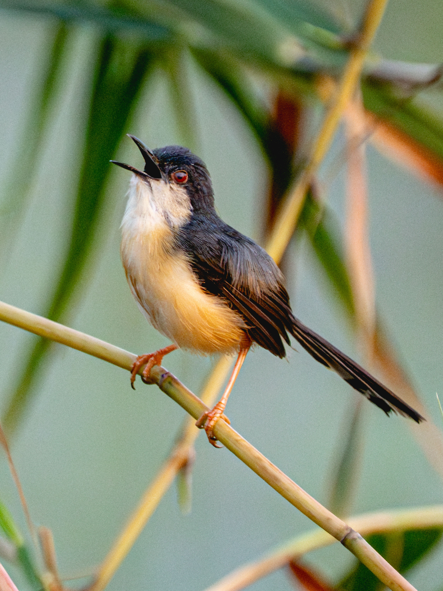

The Ashy Prinia is a familiar little bird of grasslands, gardens, scrub, farmland, and urban edges. It has greyish upperparts, pale underparts, a long tail, and a slender pointed bill. It is usually seen moving energetically through low vegetation in search of insects and is particularly noticeable because of its persistent calls. It can be distinguished from the Plain Prinia by its greyer plumage and, in breeding birds, the stronger contrast between its dark head and pale underparts. Compared with the similar Plain Prinia, it is distinguished by the combination of features described above. Its preference for grasslands, scrub, gardens, farmland, wetlands, and urban areas also helps separate it from species that use different habitats. Its characteristic behaviour, including active and restless; often moves through bushes and grasses with its tail held upright, provides another useful field clue. Taken together, these differences make it easier to distinguish from similar species when the bird is seen clearly.